Магнетайзер для
импульсного одноосного (диаметрального) намагничивания-домагничивания
магнитных систем модельных электродвигателей на основе ферритовых постоянных
магнитов
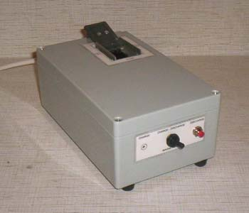
1. Введение
Появление высокоэнергетических постоянных магнитов (ферритовых, а особенно редкоземельных [4]) привело к их широкому использованию в магнитных системах электродвигателей, применяемых, в частности, в моделизме. Миниатюрные электродвигатели авиа-, судо- и автомоделей часто работают в форсированном режиме в жестких условиях эксплуатации. Требуемая высокая мощность при малых габаритах диктует необходимость повышенной плотности тока в обмотках, следствием чего является высокая рабочая температура и большие значения обратных (размагничивающих) магнитных полей. Под воздействием этих факторов магнитные системы электродвигателей подвержены размагничиванию и потере магнитных свойств, следствием чего является уменьшение мощности и повышенное энергопотребление мотора. Поэтому периодически требуется вновь намагничивать или домагничивать магнитные системы электродвигателей до насыщения [5] в установках намагничивания [10], зачастую в полевых условиях.
2. Назначение магнетайзера
Для выполнения вышеупомянутой процедуры намагничивания-домагничивания магнитных систем модельных электродвигателей на основе ферритовых постоянных магнитов вначале была разработана, изготовлена и испытана малогабаритная установка [9] в составе емкостного накопителя энергии 150 Дж 550 В [3] и импульсного индуктора с рабочей зоной (зоной намагничивания) размером 40 х 18 х 24 мм3 (намагничивание по высоте 24 мм). На ее основе, а также с учетом полученного опыта эксплуатации, был разработан магнетайзер в виде одноблочного устройства с интегрированной конденсаторной батареей и намагничивающим индуктором. Внешний вид прибора показан на рис. 2.1. Магнетайзер позволяет производить одноосное, в частности, в диаметральном направлении намагничивание магнитных систем электродвигателей на основе ферритовых постоянных магнитов, а также при необходимости одиночных постоянных магнитов подходящих размеров и состава (ферриты, ЮНДК, магнитная сталь [4]). Полярность намагничивания задается положением магнитной системы (постоянного магнита) в рабочей зоне индуктора. Рабочая зона индуктора была несколько уменьшена по длине, так как предполагается намагничивание только статоров электромоторов со снятыми крышками. Внутрь статора можно вкладывать стальной цилиндр (имитатор ротора) для улучшения качества намагничивания. Магнетайзер может применяться как в бытовых, так и в полевых условиях. При отсутствии питающей сети 110 или 220 В 50 Гц он может питаться от бортовой сети автомобиля или от аккумулятора через сравнительно маломощный преобразователь напряжения [6].
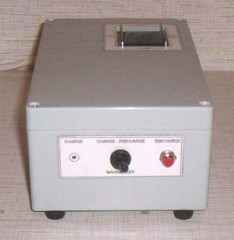 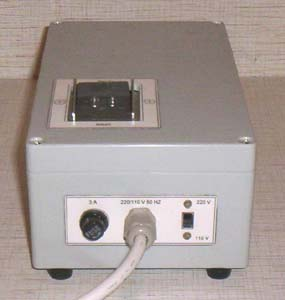
Рис. 2.1. Магнетайзер для импульсного одноосного намагничивания-домагничивания магнитных систем модельных электродвигателей на основе ферритовых магнитов. Слева - вид спереди, справа - вид сзади.
3. Технические данные магнетайзера:
4. Расчет и конструкция импульсного индуктора
Импульсный индуктор представляет из себя прямоугольную катушку индуктивности размерами 44 х 34 х 24 мм3 с проходным отверстием 28 х 18 мм2, помещенную в стальной корпус (рис. 4.1, 4.2). Индуктор крепится к печатной плате магнетайзера с помощью крепежных втулок. Намагничиваемая магнитная система устанавливается в требуемом положении в зону намагничивания и закрывается верхней стальной крышкой.
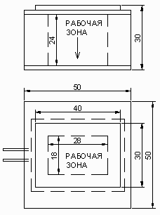
Рис. 4.1. Эскиз импульсного индуктора магнетайзера. Направление намагничивания показано стрелкой.
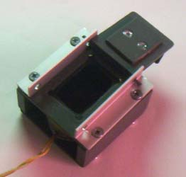 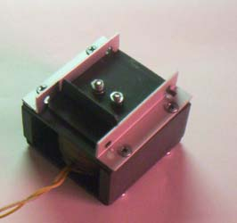
Рис. 4.2. Внешний вид импульсного индуктора магнетайзера: слева с открытой верхней крышкой, справа с закрытой верхней крышкой.
Расчет параметров катушки индуктора, импульса тока и магнитной индукции в ней выполнен с помощью программ Rectangular Coil [8] и UNI [2] с учетом данных, полученных ранее [9]. Результаты расчета показаны на рис. 4.3 и 4.4. Катушка намотана на оправке медным проводом ПЭТ-155 диаметром 0.7 мм, число витков примерно 150, расчетное активное сопротивление 0.7014 Ом, индуктивность, принятая для расчетов, 1 мГн (приблизительное значение). Емкостной накопитель энергии 150 Дж 550 В создает в катушке импульс тока амплитудой примерно 320 А и длительностью примерно 2.5 мс. При этом расчетное амплитудное значение магнитной индукции в центре катушки превышает 2 Тл. Внутреннее активное сопротивление накопителя и подключающих элементов принято равным 0.15 Ом.
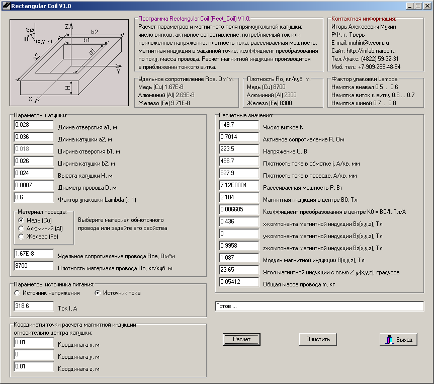
Рис. 4.3. Расчет параметров прямоугольной катушки индуктора с помощью программы Rectangular Coil: число витков примерно 150, активное сопротивление 0.7014 Ом, амплитуда осевой составляющей магнитной индукции в центре 2.104 Тл и примерно 1 Тл на краях рабочей зоны при амплитуде импульса тока 320 А.
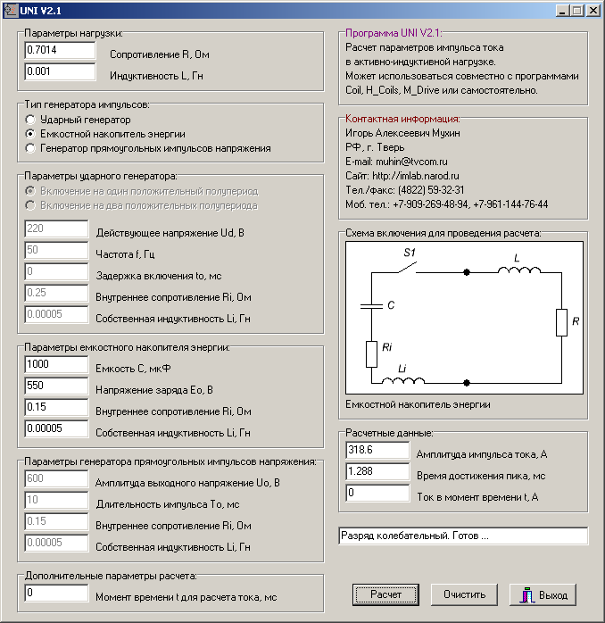
Рис. 4.4. Расчет параметров импульса тока в катушке с помощью программы UNI: емкостной накопитель 150 Дж 550 В, активное сопротивление нагрузки 0.7014 Ом, индуктивность 1 мГн, амплитуда импульса тока примерно 320 А, длительность - примерно 2.5 мс (удвоенное время достижения пика).
Перегрев провода обмотки за одиночный импульс тока амплитудой 320 А длительностью 2.5 мс рассчитан с помощью программы dTWire [1] и не превышает 9 градусов (рис. 4.5) даже в приближении прямоугольной формы импульса. Реальный перегрев предполагается примерно в 2 раза меньше.
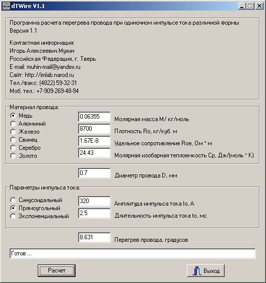
Рис. 4.5. Расчет перегрева обмотки за одиночный импульс тока с помощью программы dTWire: диаметр медного провода 0.7 мм, форма импульса тока прямоугольная, амплитуда импульса тока 320 А, длительность 2.5 мс, перегрев 8.631 градусов.
Расчет индуктора в сборе не производился, так как было понятно, что с учетом вышеизложенных расчетов и имеющегося опыта работы с аналогичным устройством [9] его параметры подходят для намагничивания любых марок ферритовых магнитов, а также ЮНД и ЮНДК [4].
5. Испытания установки
Активное сопротивление катушки индуктора измерено мультиметром APPA-107N и составляет 1.06 Ом, хорошо согласуясь с рассчитанным значением 0.7014 Ом с учетом того, что было намотано несколько больше витков, чтобы полностью закончить последний ряд намотки (165 вместо 150). Принятая в расчетах индуктивность катушки 1 мГн вполне соответствует измеренной прибором VC6243 на частоте 1000 Гц (0.73 мГн).
Для контроля параметров импульса магнитной индукции в зоне намагничивания индуктора использовался импульсный тесламетр [7] и осциллограф UTD2102CEL-R. Сигнал снимался непосредственно с выводов датчика Холла тесламетра. Форма импульса магнитной индукции в рабочей зоне индуктора при открытой верхней крышке для разных питающих напряжений показана на рис. 5.1 и 5.2. Измеренная амплитуда магнитной индукции при полном заряде конденсаторной батареи магнетайзера составляет не менее 1.25 Тл, длительность импульса на уровне половины амплитуды примерно 2.5 мс, общая длительность импульса не превышает 6 мс. Магнитный импульс с подобными параметрами вполне подходит для намагничивания для насыщения любых ферритовых магнитов или ЮНД и ЮНДК [4].
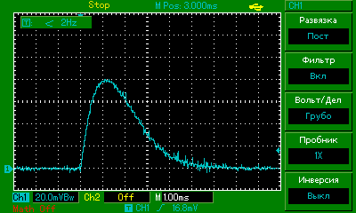
Рис. 5.1. Форма импульса магнитной индукции в зоне намагничивания индуктора при рабочем напряжении 220 В (крышка индуктора открыта): сигнал непосредственно с датчика Холла, чувствительность 59 мкВ/мТл, амплитуда магнитной индукции 80/59 ≈ 1.36 Тл.
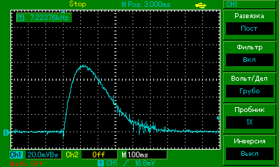
Рис. 5.2. Форма импульса магнитной индукции в зоне намагничивания индуктора при рабочем напряжении 110 В (крышка индуктора открыта): сигнал непосредственно с датчика Холла, чувствительность 59 мкВ/мТл, амплитуда магнитной индукции 76/59 ≈ 1.29 Тл.
Ссылки:
22.12.2022
Альтернативные источники
энергии
Компьютеры и
Интернет
Магнитные поля
Механотронные системы
Перспективные
разработки
Электроника и
технология